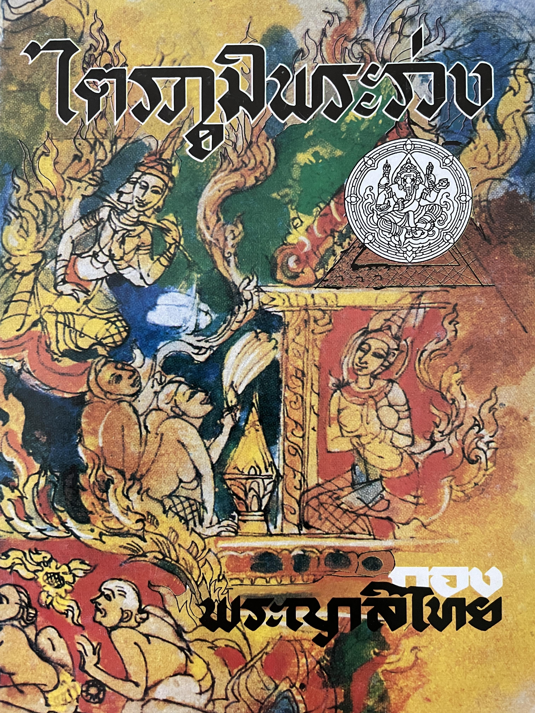

ไตรภูมิพระร่วง
ไตรภูมิพระร่วง เป็นวรรณคดีสำคัญของไทยในสมัยสุโขทัย แต่งขึ้นโดยพระมหาธรรมราชาที่ 1 หรือพญาลิไทย ประมาณ พ.ศ. 1896 มีเนื้อหาเกี่ยวกับโลกและจักรวาลตามคติความเชื่อทางพระพุทธศาสนา โดยมีจุดมุ่งหมายเพื่อสั่งสอนให้คนประพฤติดี ละเว้นความชั่ว และตระหนักถึงผลของการกระทำ คำว่า “ไตรภูมิ” หมายถึง ภูมิทั้งสาม ได้แก่ กามภูมิ รูปภูมิ และอรูปภูมิ ซึ่งเป็นลักษณะของภพภูมิตามคติพระพุทธศาสนา เนื้อหาในเรื่องกล่าวถึงการเกิดของมนุษย์ ตั้งแต่การปฏิสนธิในครรภ์มารดา การเจริญเติบโต การคลอด ตลอดจนเรื่องนรก สวรรค์ เทวดา และการเวียนว่ายตายเกิด
คุณค่าของไตรภูมิพระร่วง
ด้านเนื้อหาและแนวคิด สอนเรื่องกรรมและผลของกรรม ผู้ที่ทำความดีจะได้รับผลดี ส่วนผู้ที่ทำความชั่วจะได้รับผลชั่ว จึงมุ่งให้มนุษย์มีศีลธรรมและดำเนินชีวิตอย่างถูกต้อง
ด้านวรรณศิลป์ มีการใช้ภาษาไทยที่งดงาม การพรรณนาและการเปรียบเทียบที่ทำให้ผู้อ่านเห็นภาพ โดยเฉพาะการบรรยายเกี่ยวกับนรก สวรรค์ และการเกิดของมนุษย์
ด้านสังคมและวัฒนธรรม สะท้อนความเชื่อทางพระพุทธศาสนาและค่านิยมของสังคมสุโขทัย รวมถึงความสำคัญของศาสนาและพระมหากษัตริย์ในสมัยนั้น
ด้านประวัติศาสตร์ เป็นหลักฐานสำคัญที่แสดงถึงความเจริญรุ่งเรืองของภาษาไทย วรรณกรรม และความคิดทางศาสนาในสมัยสุโขทัย จึงนับเป็นวรรณคดีที่มีคุณค่าต่อการศึกษาประวัติศาสตร์และวัฒนธรรมไทย